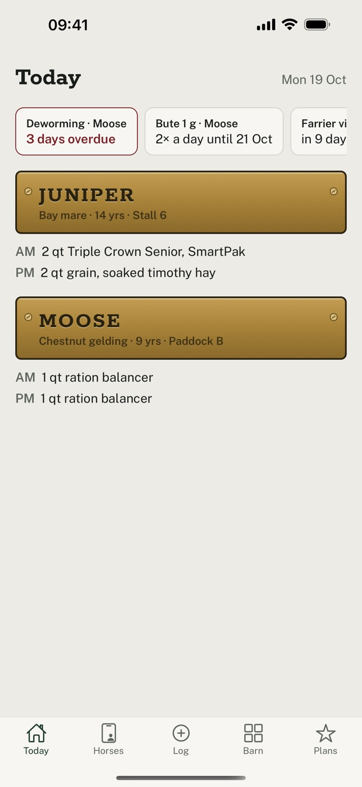
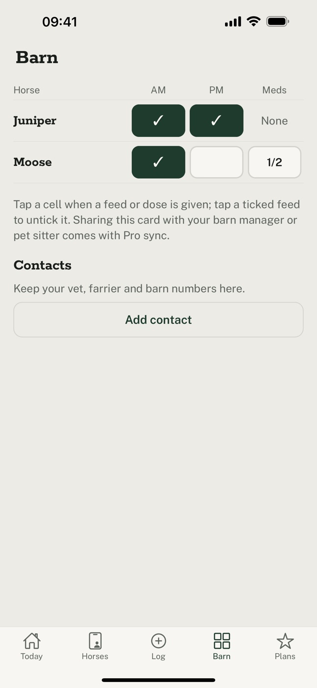
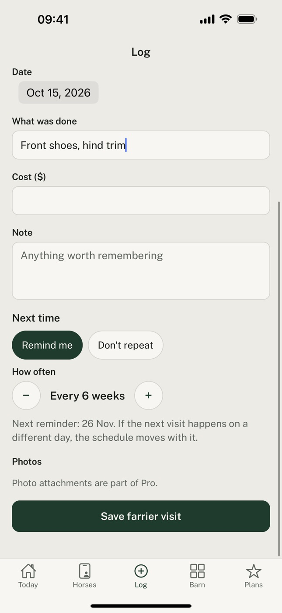

Paddock Book
Farrier, vet and feed, for every horse you look after
- Deworming, Moose3 days overdue
- Bute 1 g, Moose2× a day until 17 Oct
- Farrier visit, Juniperin 9 days
Enter the last farrier visit, deworming and vaccines once. Paddock Book tells you when each one is due next, and keeps every record on your phone.
Reminders that move with the real visit
Farrier every 6 weeks, deworming every 8, vaccines every year. When the farrier comes a week late, log the visit and the next reminder moves with it.
Overdue care is the only thing shown in red, so you can see what needs doing at a glance.

The barn card
AM and PM feeds and the day's meds for every horse. Tap a box when a feed or dose is given.
Medication courses, like bute twice a day for 5 days, remind you at each dose and stop when the course ends.

Every record, ready for the vet
Vet visits, injuries with photos, weights, body condition and costs. Edit or delete anything, with Undo.
Export everything to a spreadsheet at any time, free. Paddock Book Pro adds a vet history PDF and yearly cost reports.

What we promise
- No account needed. Open the app and start.
- Add as many horses as you like on the free plan.
- Your records stay on your phone and are backed up there daily.
- Export to a spreadsheet at any time, free.
- Features that are free today stay free.